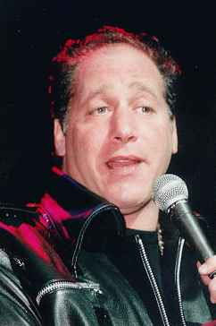
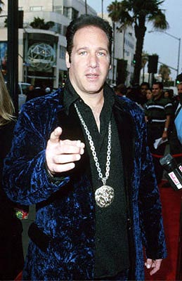
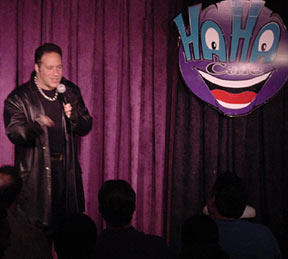
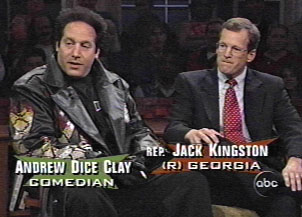
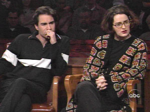
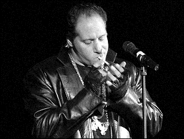

"Watching Jerry Seinfeld on stage is like watching a fucking accountant," says comedian Andrew Dice Clay. "It's just so absolutely god-awful. I would rather watch a Monday night amateur who doesn't know any better try to create something funny rather than going, 'Have you been to McDonald's lately?' Yeah, I have. What's so funny about it? The fries are good. You put me on stage, I'm the greatest stand-up ever in the history of American culture."
For a short while, that statement may not have been far from the
truth, considering any controversy surrounding Clay's plain, straightforward
blue humor predated the South Park franchise by well over a
decade. Single evening engagements with Dice packed tens of thousands
of screaming fans into auditoriums all across America, and filled
Madison Square Gardens to capacity on more than one occasion.
Andrew Clay Silverstein started practicing comedy
at age twenty. He didn't know anyone in the business, but he worked
hard every night to sharpen what can only be described as an impossibly
crass, racist, misogynist attache of gags under the guise of his
stage presence, a character affectionately referred to as Diceman.
While other comedians were out postulating whether or not you might
be redneck, Diceman had already begun dumbing it down a notch.
"All over the country, stop cigarettes, stop fuckin' cigarettes. Up in San Francisco, the fag capitol of California, they passed a bill, you can't even smoke in the street. They say it offends people. But it's okay if you wanna butt-slam your buddy while waiting for the bus? You smack him in the face with your dick five or six times? Oh, this isn't offensive. You can smoke a baloney pony, but not a fuckin' Marlboro? Wiping your ass is a filthy habit but nobody's banning that. Oh look at him - he's smoking! Yeah, and I'm jerking off too, honey. Come a little closer, I'll butter your fuckin' popcorn."
Women sitting front row center were regularly traumatized by Dice's
immediate attention. "Look at this big-titty bitch," he'd
begin. "Her tits are huge. I would not mind
sticking my dick in between those. Would you mind if I checked them
out right here? How much do they weigh?"
One female audience member, Heather Swanson, was mortified. "For ten minutes he went on about my chest. He even brought my roommate into it, fantasizing what would it be like to have both 'pairs' in his face. When it was over, if there were a garbage bag I would have worn it home. I have never seen so many people, men and women, stare at breasts like they did. No eye contact is all I could think. Just don't look up. Don't even breathe."
 Dice
is accused of trafficking only in the Insult, obvious stereotypes,
and age-old generalizations. Elder comedians like Don Rickles
and Richard Pryor have indeed paved the way for this kind of material,
but people regard Clay with contempt, like he's doing more harm
than good onstage. He entertains mindless drunken adults with excruciating
humor about Asian drivers. "How do you drive when your eyes
are three-quarters of the way shut?" he rants on an album,
even going so far as to include the shopworn bit about blinding
them with dental floss. "You don't give 'em keys to a car,
you kick 'em in the ass and say get the fuck out of the country!" Dice
is accused of trafficking only in the Insult, obvious stereotypes,
and age-old generalizations. Elder comedians like Don Rickles
and Richard Pryor have indeed paved the way for this kind of material,
but people regard Clay with contempt, like he's doing more harm
than good onstage. He entertains mindless drunken adults with excruciating
humor about Asian drivers. "How do you drive when your eyes
are three-quarters of the way shut?" he rants on an album,
even going so far as to include the shopworn bit about blinding
them with dental floss. "You don't give 'em keys to a car,
you kick 'em in the ass and say get the fuck out of the country!"
His leather jacket and booming Brooklyn drawl provide ninety-nine
percent of the assault. His appearance on the 1989 MTV Video Awards
contained so much profanity that he was banned from the network
altogether. The controversy continued the following year when Dice's
booking as guest host for Saturday Night Live caused cast member
Nora Dunn to boycott the show in protest of his remarks about women.
Dunn never returned to the cast.
Meanwhile,
other comedians didn't understand what was so funny. They analyzed
transcripts of his material - and, well, they couldn't find any
actual jokes. Entertainers on the comedy circuit
(George Carlin and Bill Cosby, chief among them) grew concerned.
The "Diceman" had effectively dumbed down audience attention
spans, conscious engagement, and expectation. Dice was an abstract
threat who made it seem like comedy without dick jokes
somehow lacked value. His ridiculous nursery rhymes were warping
the bell curve. And besides, it hardly seemed fair that brilliant,
mind-expanding satirists like Bill Hicks were forced to labor away
in relative obscurity while "controversial" Dice graduated
to celebrity millionaire status. Andrew Dice Clay was soon soaking
up everything Las Vegas had to offer.
"I've even got a telescope in my room to look into other rooms. What's better than that? What's better than peeping on some guy that's not here with his wife, ya know, pickin' up some slob in the casino, gettin' her all liquored up and they're gonna get sloppy in his room bangin' their brains out? I'm disease free; I take care of myself, and I go to sleep. I clock out before I'm finished. Masturbation is the best sleeping pill you could ever imagine. You know that. Don't ever lie to me 'cause I know when you are."
On December 11, 1998, Dice appeared on the now-defunct Politically
Incorrect with Bill Maher, alongside Republican Congressman
Jack Kingston, former MTV personality Kennedy, and Eric McCormack
from Will and Grace. It was four chirpy, polished professionals
and a lumpy, abrasive Dice Clay. He looked like a dazed alcoholic,
smoking cigarettes from his pocket and dispensing trademarked pearls
of wisdom on subjects like the Lewinsky Affair.
"They
should give Bill Clinton a raise for banging all these ugly
chicks," Dice was heard to remark. "It's not like he's
going with the Pamela Andersons of the world. Or Paula Jones - that
chick's got a snout like an anteater. Or these big, heavyset lesbians
like Linda Tripp. With them jowls hanging down. She's like a walrus
outta the zoo. She got mad that Lewinsky was getting all of it,
and that's what causes women to go with other women. Don't get me
wrong - I don't mind if they're a little thick, but there
should be a law against ugliness. There needs to be a three-week
incarceration and a $1,000 fine. With all the lipstick and rouge
and eye makeup, there should not be ugliness in this
world."
As the discussion escalated into gender matters, flat-chested activist
Kennedy tried her darnedest to give Dice the smackdown. "Andrew
- can I just say - you're so inarticulate you make Dennis Rodman
look like Oprah Winfrey."
This put-down actually fails upon closer examination, because Rodman
and Winfrey are equally inarticulate. However, a smattering of obedient
barks and seal-slaps rippled through the air-conditioned studio.
"A lot of people tell me that," Clay responded to Kennedy
over the laughter. "But later on when I get you all liquored
up and sloppy on the dance floor, all of a sudden I become your
hero. Look what I'm doing to you now. Good for me. You wouldn't
talk to me if I didn't appeal to you." Kennedy squinched up
her face, effectively telegraphing her disgust.

Dice briefly tried to change his image, with limited success. He
shortened his name to Andrew Clay and took the lead role in Bless
This House, a squeaky-clean, profanity-free CBS sitcom fashioned
after The Honeymooners.
GLAAD took issue with Dice's presence on network television right
away, protesting his sexist, homophobic reputation. Peter Noah,
an independent producer for Warner Bros. Television emphatically
asserted that the Diceman persona was distinctly different
from Andrew Clay the actor. It was decided that Clay's character
would not talk, dress, or behave in any way like Dice - and surprise,
the show lasted less than five months. Clay returned to Las Vegas,
where he performs Diceman routines to this day.
"It's not about the controversy - it's about being funny,
and being funny means saying whatever you feel like saying to make
people laugh. I'm not saying this to 5-year-olds. I'm saying this
to adults. I never incited riots. I did gay material, I still do
the sex material, but it wasn't to hurt, it was to make jokes. If
you take away the people, what are you going to say? What are you
going to make jokes about? Trees?" |